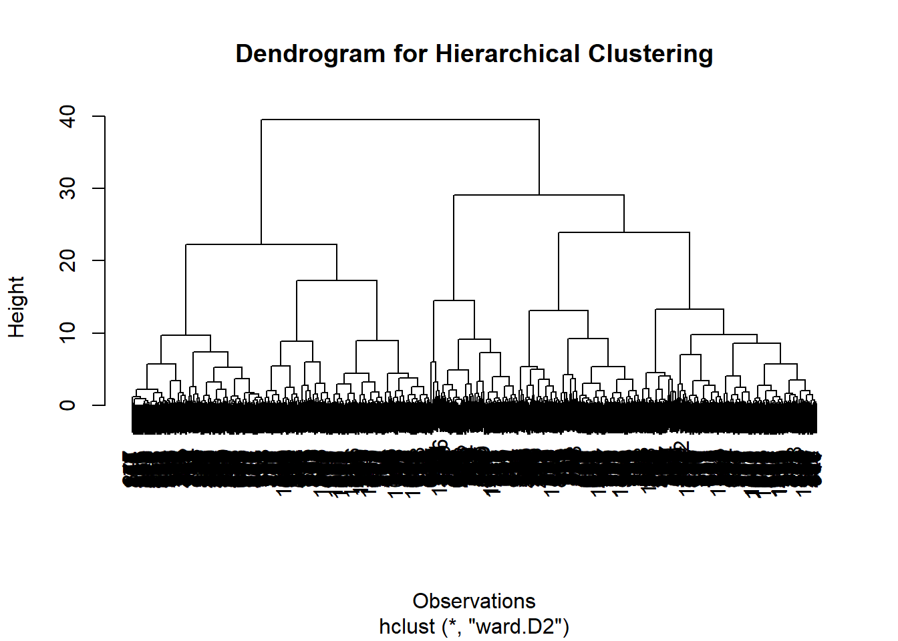
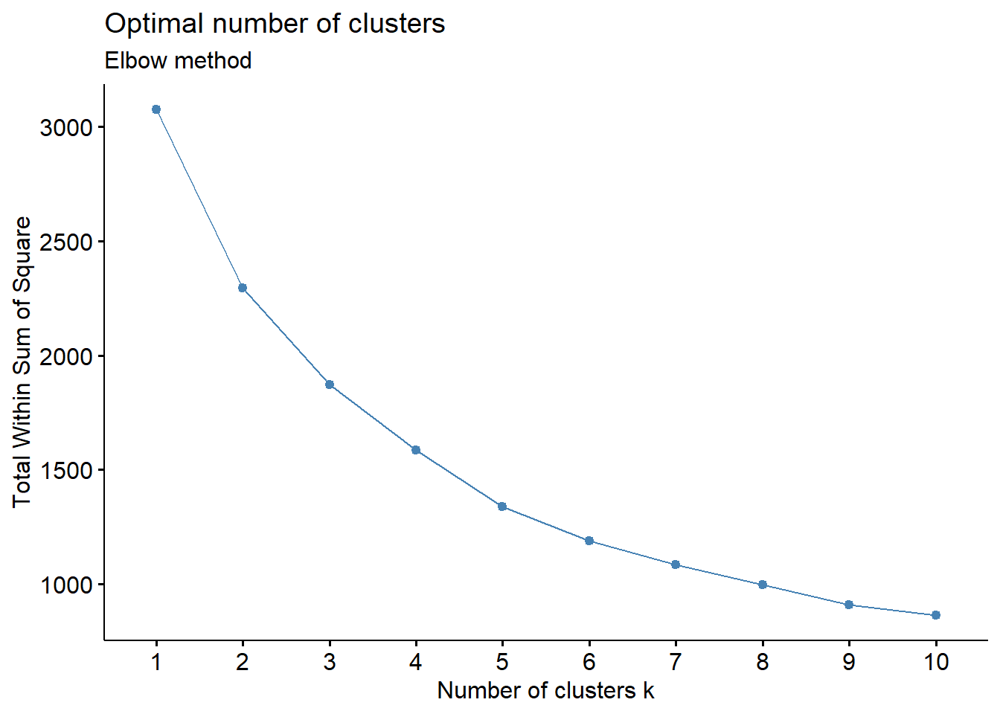
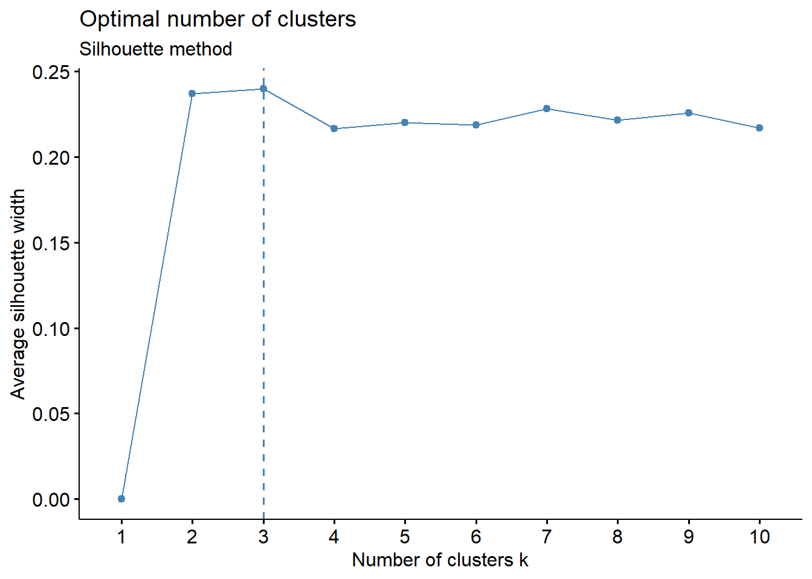
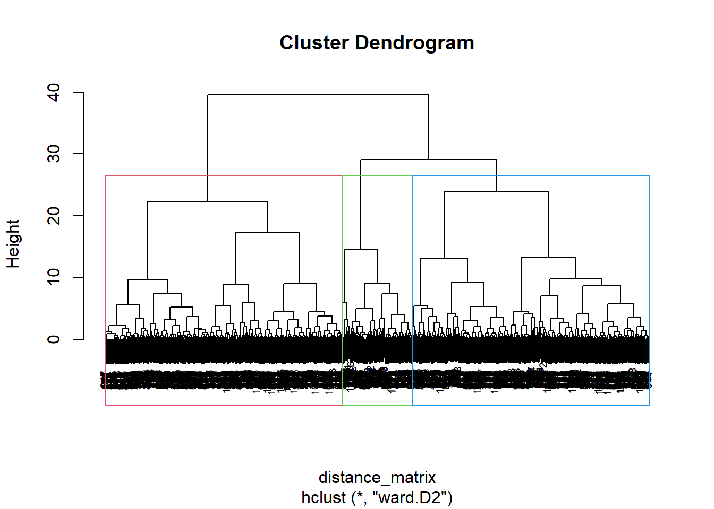
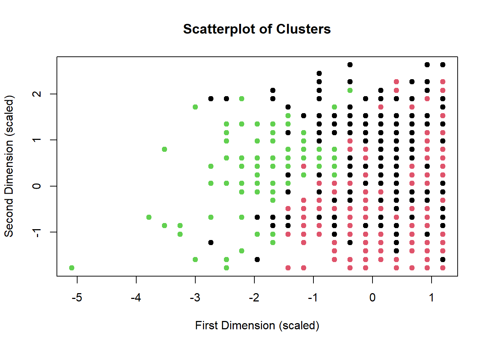
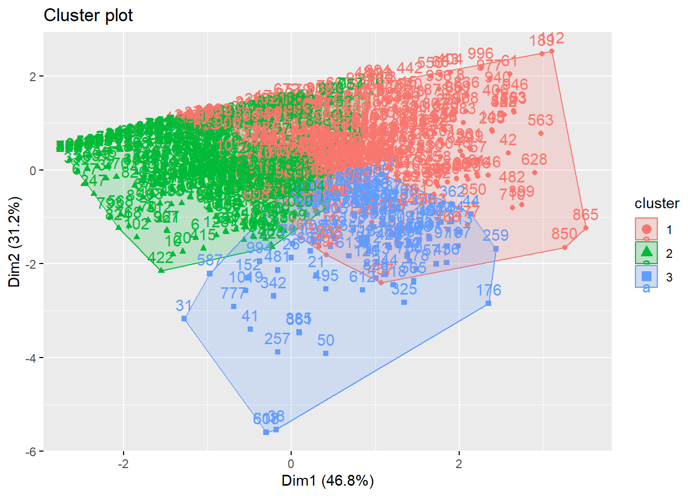

##Check working directory
getwd()[1] "C:/Users/antje/Documents/studium PUK/Master-Publizistik/STUDIENASSISTENZ/Test Tutorial"Kathrin Karsay und Annie Waldherr
January 10, 2025
Die Clusteranalyse ist eine Analysemethode, mit der Datenpunkte auf der Grundlage ihrer Ähnlichkeit gruppiert werden. In dieser Übung führen Sie ein hierarchisches Clustering nach der Ward-Methode durch. Sie werden lernen, wie man
Wie immer prüfen wir zuerst mit “getwd()”, unter welchem Pfad sich unser Arbeitsverzeichnis befindet. Alle Skripte und Datensätze, mit denen wir arbeiten wollen, sollten in diesem Ordner abgelegt sein.
Dann laden wir wieder mit dem Paket “pacman” die nötigen R-Pakete.
Für diese Übung werden wir die Daten (n=1027) einer repräsentativen Stichprobe der niederländischen Bevölkerung verwenden. Die Daten werden in diesem Artikel beschrieben:
Smit, E. S., & Bol, N. (2019). From self-reliers to expert-dependents: identifying classes based on health-related need for autonomy and need for external control among mobile users. Media Psychology, 23(3), 391–414. https://doi.org/10.1080/15213269.2019.1604235
Hinweis: Die Autoren verwenden eine etwas andere Methode der Clusteranalyse, nämlich Latent Class Analysis. Wie Sie jedoch sehen werden, wird unsere Clusteranalyse ähnliche Ergebnisse liefern.
Wir werfen einen ersten Blick auf den Datensatz:
Für die weitere Analyse wollen wir fehlende Werte ausschließen. Mit der Funktion “anyNA” bekommen wir zunächst die Information, dass der Datensatz fehlende Werte (NA) enthält. Anschließend nutzen wir, wie in den vorigen Übungen, “drop_na”, um diese Fälle auszuschließen.
Wir inspizieren den Datensatz nochmals. Er enthält jetzt n=1026 Fälle.
Wir wollen besser verstehen, wie sich Nutzer:innen mobiler Technologien in ihrem Bedürfnis nach Autonomie und ihrem Bedürfnis nach externer Kontrolle in Bezug auf gesundheitsbezogene Entscheidungen voneinander unterscheiden.
Forschungsfrage: Welche Subtypen können wir unter den Nutzern mobiler Technologien in Bezug auf gesundheitsbezogene Entscheidungen identifizieren, und zwar auf Grundlage ihrer Bedürfnisse nach Autonomie und externer Kontrolle?
Wir werden die folgenden drei Variablen für die Clusteranalyse verwenden:
# Select only the variables of interest
df1 <- df %>%
dplyr::select(HCOS_autonomy, HCOS_control_expert, HCOS_control_peer)
# Inspect data
head(df1) HCOS_autonomy HCOS_control_expert HCOS_control_peer
1 6 2,5 4,5
2 5,5 3,75 3,75
3 7 6,25 3,75
4 5,25 3 4,25
5 6 4 1,5
6 5 2 1,5Rows: 1,026
Columns: 3
$ HCOS_autonomy <chr> "6", "5,5", "7", "5,25", "6", "5", "6,75", "6,75",…
$ HCOS_control_expert <chr> "2,5", "3,75", "6,25", "3", "4", "2", "4,75", "7",…
$ HCOS_control_peer <chr> "4,5", "3,75", "3,75", "4,25", "1,5", "1,5", "4,75…Bei der Inspektion des Datensatzes fällt uns auf, dass die Variablen nicht numerisch sind. Dies ändern wir mit dem folgenden Code und ersetzen dabei auch gleich Kommas durch Punkte.
# Convert variables to numeric by replacing commas with periods
df1$HCOS_autonomy <- as.numeric(gsub(",", ".", df1$HCOS_autonomy))
df1$HCOS_control_expert <- as.numeric(gsub(",", ".", df1$HCOS_control_expert))
df1$HCOS_control_peer <- as.numeric(gsub(",", ".", df1$HCOS_control_peer))
# Verify the structure of the cleaned dataset
glimpse(df1)Rows: 1,026
Columns: 3
$ HCOS_autonomy <dbl> 6.00, 5.50, 7.00, 5.25, 6.00, 5.00, 6.75, 6.75, 6.…
$ HCOS_control_expert <dbl> 2.50, 3.75, 6.25, 3.00, 4.00, 2.00, 4.75, 7.00, 4.…
$ HCOS_control_peer <dbl> 4.50, 3.75, 3.75, 4.25, 1.50, 1.50, 4.75, 4.50, 1.…Wir lassen uns deskriptive Statistiken zu den Variablen ausgeben:
HCOS_autonomy HCOS_control_expert HCOS_control_peer
Min. :1.000 Min. :1.000 Min. :1.000
1st Qu.:5.250 1st Qu.:2.312 1st Qu.:2.000
Median :6.000 Median :3.500 Median :3.250
Mean :5.864 Mean :3.419 Mean :3.179
3rd Qu.:6.750 3rd Qu.:4.250 3rd Qu.:4.250
Max. :7.000 Max. :7.000 Max. :7.000 Da allen drei Variablen dieselbe Messskala zugrundeliegt (Likert-Skala von 1-7), ist eine Standardisierung der Variablen in diesem Fall nicht notwendig; sie schadet aber auch nicht.
Der Vollständigkeit halber fügen wir deshalb in diesem Tutorial den entsprechenden Code hinzu. Mit dem Befehl “scale” standardisieren wir alle Variablen in unserem Datensatz “df1”. Dabei wird von jedem Wert der Mittelwert der jeweiligen Variablen subtrahiert (Zentrierung) und durch ihre Standardabweichung dividiert (Skalierung). Als Resultat erhalten wir nun eine Matrix, weshalb wir unseren Datensatz wieder in einen Dataframe umwandeln müssen.
[1] "matrix" "array" cluster_df1 <- as.data.frame(cluster_df1)
# Display the summary of the scaled data
summary(cluster_df1) HCOS_autonomy HCOS_control_expert HCOS_control_peer
Min. :-5.0932 Min. :-1.77847 Min. :-1.58373
1st Qu.:-0.6432 1st Qu.:-0.81345 1st Qu.:-0.85687
Median : 0.1421 Median : 0.05966 Median : 0.05172
Mean : 0.0000 Mean : 0.00000 Mean : 0.00000
3rd Qu.: 0.9274 3rd Qu.: 0.61110 3rd Qu.: 0.77858
Max. : 1.1892 Max. : 2.63304 Max. : 2.77747 [1] 1[1] 1[1] 1Die standardisierten Daten haben für alle Variablen den Mittelwert=0 und die Standardabweichung=1. Nun sind wir endlich bereit für die eigentliche Clusteranalyse.
Wir berechnen paarweise Distanzen nach der Euklidischen Distanz.
# Compute the Euclidean distance matrix
distance_matrix <- dist(cluster_df1, method = "euclidean")
# Display the first few entries of the distance matrix
as.matrix(distance_matrix)[1:20, 1:20] 1 2 3 4 5 6 7
1 0.0000000 1.1899405 2.9992782 0.8859297 2.4436360 2.4467375 1.8402409
2 1.1899405 0.0000000 2.4177526 0.7104162 1.7270130 2.1457773 1.6679300
3 2.9992782 2.4177526 0.0000000 3.0331040 2.5510429 4.1017844 1.3465501
4 0.8859297 0.7104162 3.0331040 0.0000000 2.2699851 2.1458456 2.0626351
5 2.4436360 1.7270130 2.5510429 2.2699851 0.0000000 1.8051980 2.5497701
6 2.4467375 2.1457773 4.1017844 2.1458456 1.8051980 0.0000000 3.6092092
7 1.8402409 1.6679300 1.3465501 2.0626351 2.5497701 3.6092092 0.0000000
8 3.4005527 2.7785405 0.8184106 3.3390648 3.1995433 4.6505376 1.6642672
9 2.2829531 1.5560263 2.4385372 2.1117273 0.1817167 1.8143211 2.3823945
10 2.6315271 2.6111866 4.7501385 2.3955305 2.5712720 0.8013356 4.0917690
11 0.3678730 1.0665144 2.9771948 0.6632953 2.5482825 2.5497701 1.8051980
12 1.8414189 1.6744886 1.2994593 2.1463825 2.1292258 3.3265973 0.6320587
13 2.3694574 2.1891835 3.6121988 2.3823945 1.2994593 1.0785020 3.2353562
14 2.2463730 1.4072287 3.2535635 1.3932116 2.7178889 2.7109041 2.6682339
15 1.9702287 1.9676590 1.7037866 2.2243883 3.0617235 3.9873819 0.5451501
16 1.7561138 1.6865135 3.6633407 1.6499875 1.6533783 0.7558295 3.0171854
17 1.5609200 0.7754183 2.1022769 1.1479909 2.2724999 2.8996255 1.3341170
18 1.7630814 2.1052888 2.5125583 2.0897359 3.4920844 4.0681386 1.2495446
19 2.8476412 3.0330028 4.0240178 3.1866092 2.1464304 2.1570039 3.6343192
20 2.4962962 2.5145538 4.6977124 2.2607893 2.5904637 0.8609307 3.9978859
8 9 10 11 12 13 14
1 3.4005527 2.2829531 2.6315271 0.3678730 1.8414189 2.3694574 2.246373
2 2.7785405 1.5560263 2.6111866 1.0665144 1.6744886 2.1891835 1.407229
3 0.8184106 2.4385372 4.7501385 2.9771948 1.2994593 3.6121988 3.253563
4 3.3390648 2.1117273 2.3955305 0.6632953 2.1463825 2.3823945 1.393212
5 3.1995433 0.1817167 2.5712720 2.5482825 2.1292258 1.2994593 2.717889
6 4.6505376 1.8143211 0.8013356 2.5497701 3.3265973 1.0785020 2.710904
7 1.6642672 2.3823945 4.0917690 1.8051980 0.6320587 3.2353562 2.668234
8 0.0000000 3.0785704 5.2765901 3.3005884 1.8919111 4.2888724 3.312629
9 3.0785704 0.0000000 2.5648428 2.3808024 1.9764120 1.3370330 2.587176
10 5.2765901 2.5648428 0.0000000 2.7398812 3.8532201 1.6400683 3.047331
11 3.3005884 2.3808024 2.7398812 0.0000000 1.9146336 2.5837527 1.953261
12 1.8919111 1.9764120 3.8532201 1.9146336 0.0000000 2.7979739 2.891024
13 4.2888724 1.3370330 1.6400683 2.5837527 2.7979739 0.0000000 3.205464
14 3.3126294 2.5871761 3.0473306 1.9532613 2.8910237 3.2054635 0.000000
15 1.8069586 2.8897233 4.4065032 1.8857170 1.1362499 3.6794671 2.795159
16 4.2311514 1.6026712 1.1355090 1.9169514 2.7319506 0.9144463 2.561868
17 2.2564975 2.0987553 3.3517951 1.3255628 1.6121073 2.9311081 1.334117
18 2.5596695 3.3125335 4.3499132 1.6279239 1.7561138 3.8907640 2.774426
19 4.7847299 2.1845522 2.4459459 3.1602935 3.1016731 1.1972737 4.237924
20 5.2104667 2.5712720 0.1817167 2.5975887 3.7796757 1.6896534 2.942588
15 16 17 18 19 20
1 1.9702287 1.7561138 1.5609200 1.7630814 2.847641 2.4962962
2 1.9676590 1.6865135 0.7754183 2.1052888 3.033003 2.5145538
3 1.7037866 3.6633407 2.1022769 2.5125583 4.024018 4.6977124
4 2.2243883 1.6499875 1.1479909 2.0897359 3.186609 2.2607893
5 3.0617235 1.6533783 2.2724999 3.4920844 2.146430 2.5904637
6 3.9873819 0.7558295 2.8996255 4.0681386 2.157004 0.8609307
7 0.5451501 3.0171854 1.3341170 1.2495446 3.634319 3.9978859
8 1.8069586 4.2311514 2.2564975 2.5596695 4.784730 5.2104667
9 2.8897233 1.6026712 2.0987553 3.3125335 2.184552 2.5712720
10 4.4065032 1.1355090 3.3517951 4.3499132 2.445946 0.1817167
11 1.8857170 1.9169514 1.3255628 1.6279239 3.160293 2.5975887
12 1.1362499 2.7319506 1.6121073 1.7561138 3.101673 3.7796757
13 3.6794671 0.9144463 2.9311081 3.8907640 1.197274 1.6896534
14 2.7951587 2.5618675 1.3341170 2.7744265 4.237924 2.9425883
15 0.0000000 3.3737003 1.5083708 0.8184106 4.059230 4.2964710
16 3.3737003 0.0000000 2.4603696 3.4222951 1.851345 1.0910169
17 1.5083708 2.4603696 0.0000000 1.6880562 3.715410 3.2467046
18 0.8184106 3.4222951 1.6880562 0.0000000 4.267909 4.2149747
19 4.0592302 1.8513452 3.7154100 4.2679095 0.000000 2.4927491
20 4.2964710 1.0910169 3.2467046 4.2149747 2.492749 0.0000000Nun wenden wir Ward’s Methode des hierarchischen Clustering an.
# Perform hierarchical clustering
hc1 <- hclust(distance_matrix, method = "ward.D2")
# Display the dendrogram
plot(hc1,
main = "Dendrogram for Hierarchical Clustering",
xlab = "Observations",
ylab = "Height")
Das Dendrogramm stellt dar, wie die Cluster schrittweise durch das Zusammenführen einzelner Datenpunkte (oder kleinerer Cluster) zu größeren Clustern gebildet werden. Es ist wie ein Baum, wobei jeder Zweig einen Datenpunkt oder ein Cluster von Datenpunkten darstellt. Je weiter man den Baum hinuntergeht, desto ähnlicher sind sich die Datenpunkte. Die Höhe, in der sich zwei Zweige (Cluster) treffen, stellt die Unähnlichkeit (oder den Abstand) zwischen ihnen dar. Eine geringere Höhe bedeutet, dass sich die Cluster sehr ähnlich sind, während eine größere Höhe bedeutet, dass die Cluster unterschiedlicher sind.
Wir verwenden zwei Visualisierungsmethoden, um die optimale Anzahl von Clustern zu bestimmen: das Ellbogen-Kriterium und die Silhouettenanalyse.
#Elbow method
fviz_nbclust(cluster_df1, FUN = hcut, method = "wss") + labs(subtitle = "Elbow method")Warning: The `size` argument of `element_line()` is deprecated as of ggplot2 3.4.0.
ℹ Please use the `linewidth` argument instead.
ℹ The deprecated feature was likely used in the ggpubr package.
Please report the issue at <https://github.com/kassambara/ggpubr/issues>.Warning: The `size` argument of `element_rect()` is deprecated as of ggplot2 3.4.0.
ℹ Please use the `linewidth` argument instead.
ℹ The deprecated feature was likely used in the ggpubr package.
Please report the issue at <https://github.com/kassambara/ggpubr/issues>.Warning: Using `size` aesthetic for lines was deprecated in ggplot2 3.4.0.
ℹ Please use `linewidth` instead.
ℹ The deprecated feature was likely used in the ggpubr package.
Please report the issue at <https://github.com/kassambara/ggpubr/issues>.
## Silhouette method
fviz_nbclust(cluster_df1, FUN = hcut, method = "silhouette")+labs(subtitle = "Silhouette method")
Interpretation der Diagramme:
Das Ellbogendiagramm visualisiert die Fehlerquadratsumme innerhalb der Cluster (Within Sum of Square; WSS) in Abhängigkeit von der Anzahl der Cluster. Ziel ist es, den Knick zu identifizieren, an dem sich die Abnahme der WSS verlangsamt. Untersuchen Sie das Diagramm und suchen Sie den Punkt, an dem die Kurve einen „Ellbogen“ bildet oder abflacht. Dieser Punkt stellt die optimale Anzahl von Clustern dar.
Wenn kein eindeutiger Knick vorhanden ist, können Sie zusätzlich den Silhouettenkoeffizienten berechnen. Dieser misst, wie ähnlich ein Objekt seinem eigenen Cluster im Vergleich zu Objekten im nächsten benachbarten Cluster ist. Je näher bei 1 der Koeffizient ist, desto besser sind die Cluster abgegrenzt und desto größer ist die Kohäsion der Cluster. Suchen Sie im Diagramm nach der Anzahl der Cluster mit dem höchsten durchschnittlichen Silhouettenkoeffizienten. In unserem Fall sind es drei Cluster.
Decide on the number of clusters and assign cluster labels to the data (e.g., 3).
# Cut the dendrogram/tree to create 3 clusters
clusters <- cutree(hc1, k = 3)
# Add cluster membership to the original dataset
df1$Cluster <- clusters
#Visualize the clusters in the dendrogram
plot(hc1, cex = 0.6)
rect.hclust(hc1, k = 3, border = 2:5)
# Scatterplot of the first two dimensions (scaled data)
plot(cluster_df1[, 1:2],
col = clusters,
pch = 19,
main = "Scatterplot of Clusters",
xlab = "First Dimension (scaled)",
ylab = "Second Dimension (scaled)")

Interpretation der Diagramme:
Das Dendrogramm gibt Aufschluss über die Beziehung zwischen den Datenpunkten und wie sie aufgrund ihrer Ähnlichkeiten gruppiert sind (siehe oben). Die Rechtecke heben die drei Hauptcluster hervor und zeigen die Ebene, auf der jedes Cluster gebildet wurde.
Das Streudiagramm projiziert die Daten auf ihre ersten beiden Hauptkomponenten (oder Dimensionen), wobei jeder Punkt eine Beobachtung darstellt, die entsprechend dem ihr zugewiesenen Cluster eingefärbt ist. Achtung! Die Dimensionen für das Streudiagramm oder das Clusterdiagramm entsprechen nicht den ersten beiden Variablen, die in das Clustering eingegeben wurden, sondern stellen in der Regel die ersten beiden Hauptkomponenten dar. Im Grunde führt R eine Faktorenanalyse durch, um die dreidimensionalen Daten zu visualisieren und auf zwei Dimensionen zu projizieren.
Der Cluster Plot ist ein verfeinertes Streudiagramm nach derselben Logik. Es zeigt die einzelnen Datenpunkte in einem 2D-Diagramm, wobei die Cluster durch unterschiedliche Farben deutlich gekennzeichnet sind.
# Calculate the mean of each variable for each cluster
cluster_summary <- aggregate(df1, by = list(Cluster = clusters), FUN = mean)
cluster_size <- table(clusters)
# Add the size of each cluster to the cluster_summary
cluster_summary$Members <- cluster_size[as.factor(cluster_summary$Cluster)]
# Calculate and add the percentage of members per cluster
total_members <- sum(cluster_size)
cluster_summary$Percentage <- (cluster_summary$Members / total_members) * 100
# Display cluster summary
cluster_summary Cluster HCOS_autonomy HCOS_control_expert HCOS_control_peer Cluster Members
1 1 5.960291 3.762864 4.354027 1 447
2 2 6.243848 2.894295 2.045861 2 447
3 3 4.253788 4.030303 3.035985 3 132
Percentage
1 43.56725
2 43.56725
3 12.86550Beschreibung:
Cluster 1: Unabhängige Die Tabelle zeigt, dass die Befragten (n = 461) in Cluster 1 mit 6.16 (auf einer 7-Punkte-Skala) eine vergleichsweise sehr hohe Autonomieorientierung aufweisen während ihre Werte für die Kontrollorientierung, verglichen mit den anderen Clustern, unterdurchschnittlich ausgeprägt sind (Experten: M = 2.33; Peers: M = 2.60).
Cluster 2: Bestätigungssuchende Die zweite Gruppe von Befragten wurde als Bestätigungssuchende bezeichnet (n = 396). Diese Gruppe von Befragten gab relativ hohe Werte sowohl für die Autonomie (M = 6.13) als auch für die Kontrollorientierung an (Kontrollorientierung - Experten: M = 4.60; Kontrollorientierung - Peers: M = 3.60).
Cluster 3: Abhängige Die dritte Gruppe von Befragten ist eher von externer Bestätigung abhängig (n = 169). Die Befragten gaben unterdurchschnittliche Werte für die Autonomieorientierung an (M = 4.42), die Werte der Kontrollorientierung gegenüber Experten waren im Vergleich zur Gesamtstichprobe leicht überdurchschnittlich (M = 3.60), ebenso gegenüber Peers (M = 3.78). Die Experten-Abhängigen sind die kleinste Gruppe in unserer Stichprobe (16 %).
##Hausübung 10 Jetzt sind Sie dran! Wir verwenden für diese Übung die reliablen Wertefaktoren aus den Ergebnissen der HÜ9. Den Datensatz dazu finden Sie im Ordner der Übung 10. Sie können ihn hier wieder mit load(df_c) einlesen
Zur Erinnerung: folgende Wertefaktoren waren reliabel: - persönliche Werte: “TC1” - Vergnügen: “TC2” - Status: “TC3”
Antwort: hier eigentlich nicht notwendig, denn es gibt keine Missings (hatten wir ja bei der letzen HÜ schon ausgeschlossen), und die Faktorwerte sind sowieso schon standardisiert. :-)
Wichtig! Speichern Sie das angepasste Markdown mit einem Dateinamen nach dem folgenden Muster: Nachname_Übung10.Rmd Laden Sie diese Datei in den dafür vorgesehenen Ordner in Moodle.